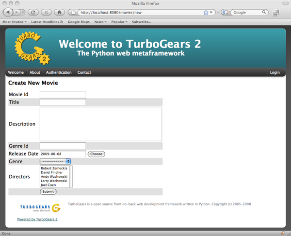
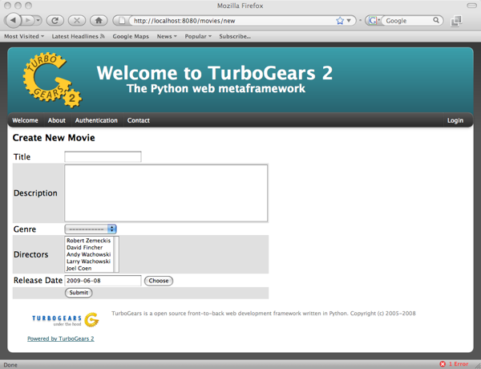
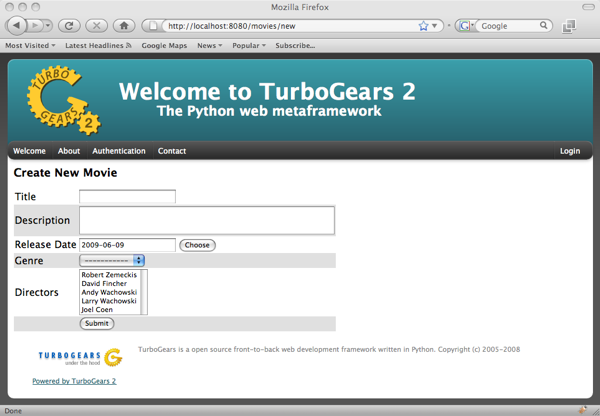
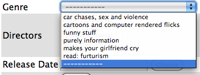
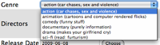
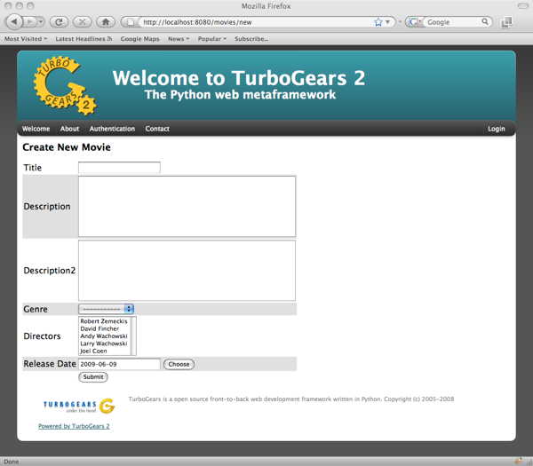
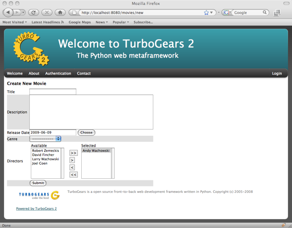
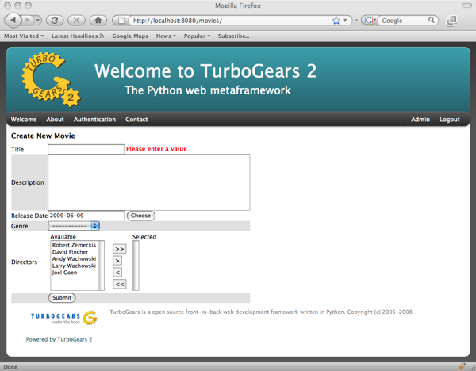
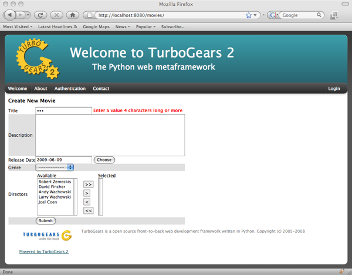
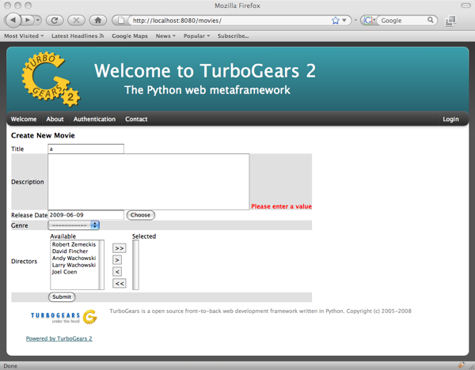

Form Tutorial¶
This is a succinct explanation on how to use sprox’s form rendering capabilities. Many of these examples will provide server code based on TurboGears2, but sprox will work with any wsgi application you have ToscaWidgets mounted in. We will assume the reader is somewhat versed in TurboGears2’s tg.controllers.RestController. Note that this is the same technology the Turbogears2 admin is based on, so this knowledge is valuable to understand how to configure the admin for your purposes.
Establishing the Model Definition¶
Let us first assume the following model for this demonstration.:
from sqlalchemy import Column, Integer, String, Date, Text, ForeignKey, Table
from sqlalchemy.orm import relation
from moviedemo.model import DeclarativeBase, metadata
movie_directors_table = Table('movie_directors', metadata,
Column('movie_id', Integer, ForeignKey('movies.movie_id'), primary_key = True),
Column('director_id', Integer, ForeignKey('directors.director_id'), primary_key = True))
class Genre(DeclarativeBase):
__tablename__ = "genres"
genre_id = Column(Integer, primary_key=True)
name = Column(String(100))
description = Column(String(200))
class Movie(DeclarativeBase):
__tablename__ = "movies"
movie_id = Column(Integer, primary_key=True)
title = Column(String(100), nullable=False)
description = Column(Text, nullable=True)
genre_id = Column(Integer, ForeignKey('genres.genre_id'))
genre = relation('Genre', backref='movies')
release_date = Column(Date, nullable=True)
class Director(DeclarativeBase):
__tablename__ = "directors"
movie_id = Column(Integer, primary_key=True)
title = Column(String(100), nullable=False)
movies = relation(Movie, secondary_join=movie_directors_table, backref="directors")
The Basic Sprox Form¶
Here is how we create a basic form for adding a new Movie to the database:
class NewMovieForm(AddRecordForm):
__model__ = Movie
new_movie_form = NewMovieForm(DBSession)
And our controller code would look something like this:
@expose('moviedemo.templates.sproxdemo.movies.new')
def new(self, **kw):
tmpl_context.widget = new_movie_form
return dict(value=kw)
You may have noticed that we are passing keywords into the method. This is so that the values previously typed by the user can be displayed on failed validation.
And finally, our template code:
<html xmlns="http://www.w3.org/1999/xhtml"
xmlns:py="http://genshi.edgewall.org/"
xmlns:xi="http://www.w3.org/2001/XInclude">
<xi:include href="master.html" />
<head/>
<body>
<div style="height:0px;"> </div>
<div>
<div style="float:left width: 80%">
<h2 style="margin-top:1px;>Create New Movie</h2>
${tmpl_context.widget(value=value)}
</div>
</div>
</body>
</html>
Which produces a form like this:
Omitting Fields¶
Now, we can use the __omit_fields__ modifier to remove the “movie_id” and “genre_id” fields, as they will be of little use to our users. Our form code now becomes:
class NewMovieForm(AddRecordForm):
__model__ = Movie
__omit_fields__ = ['genre_id', 'movie_id']
The rendered form now looks like this:
Limiting fields¶
If you have more omitted fields than required fields, you might want to use the __limit_fields__ operator to eliminate the fields you don’t want. The same above form will be rendered with the following code:
class NewMovieForm(AddRecordForm):
__model__ = Movie[
__limit_fields__ = ['title', 'description', 'release_date', 'genre', 'directors']
Field Ordering¶
If you want the fields displayed in a ordering different from that of the specified schema, you may use field_ordering to do so. Here is our form with the fields moved around a bit:
class NewMovieForm(AddRecordForm):
__model__ = Movie
__omit_fields__ = ['movie_id', 'genre_id']
__field_order__ = ['title', 'description', 'genre', 'directors']
Notice how the release_date field that was not specified was still appended to the end of the form.
Overriding Field Attributes¶
Sometimes we will want to modify some of the HTML attributes associated with a field. This is as easy as passing a __field_attrs__ modifier to our form definition. Here is how we could modify the description to have only 2 rows:
class NewMovieForm(AddRecordForm):
__model__ = Movie
__omit_fields__ = ['movie_id', 'genre_id']
__field_attrs__ = {'description':{'rows':'2'}}
Here is the resultant form:
Overriding a Form Field¶
Sometimes you want to override a field all together. Sprox allows you to do this by providing an attribute to your form class declaratively. Simply instantiate your field within the widget and it will override the widget used for that field. Let’s change the movie title to a password field just for fun.:
from tw.forms.fields import PasswordField
class NewMovieForm(AddRecordForm):
__model__ = Movie
__omit_fields__ = ['movie_id', 'genre_id']
__field_attrs__ = {'description':{'rows':'2'}}
title = PasswordField
You can see now that the title is “stared” out. Note that you may also send an “instance” of a widget for a field, but you must pass in the fieldname to the widget. This is a limitation of ToscaWidgets. (You may not change the “id” of a widget after it has been created.):
title = PasswordField('title')
Field Widget Args¶
Sometimes you want to provide sprox with a class for a field, and have sprox set the arguments to a widget, but you either want to provide an additional argument, or override one of the arguments that sprox chooses. For this, pass a dictionary into the __field_widget_args__ parameter with the key being the field you would like to pass the arg into, and the value a dictionary of args to set for that field.
Custom Dropdown Field Names¶
Sometimes you want to display a field to the user for the dropdown that has not been selected by sprox. This is easy to override. Simply pass the field names for the select boxes you want to display into the __dropdown_field_names__ modifier.:
class NewMovieForm(AddRecordForm):
__model__ = Movie
__omit_fields__ = ['movie_id', 'genre_id']
__field_order__ = ['title', 'description', 'genre', 'directors']
__dropdown_field_names__ = ['description', 'name']
If you want to be more specific about which fields should display which field, you can pass a dictionary into the __dropdown_field_names__ modifier.:
class NewMovieForm(AddRecordForm):
__model__ = Movie
__omit_fields__ = ['movie_id', 'genre_id']
__field_order__ = ['title', 'description', 'genre', 'directors']
__dropdown_field_names__ = {'genre':'description', 'directors':'name'}
Either will produce a new dropdown like this:
Creating Custom Dropdown Data¶
Sometimes providing a fieldname alone is not enough of a customization to que your users into what they should be selecting. For this example, we will provide both name and description for the Genre field. This requires us to override the genre widget with one of our choosing. We will exend the existing sprox dropdown widget, modifying the update_params method to inject both name and description into the dropdown. This requires some knowledge of ToscaWidgets in general, but this recipe will work for the majority of developers looking to modify their dropdowns in a custom manner.
First, we extend the Sprox SingleSelect Field as follows:
from sprox.widgets import PropertySingleSelectField
class GenreField(PropertySingleSelectField):
def _my_update_params(self, d, nullable=False):
genres = DBSession.query(Genre).all()
options = [(genre.genre_id, '%s (%s)'%(genre.name, genre.description))
for genre in genres]
d['options']= options
return d
Then we include our new widget in the definition of the our movie form:
class NewMovieForm(AddRecordForm):
__model__ = Movie
__omit_fields__ = ['movie_id', 'genre_id']
__field_order__ = ['title', 'description', 'genre', 'directors']
__dropdown_field_names__ = {'genre':'description', 'directors':'name'}
genre = GenreField
Here is the resulting dropdown:
Adding a New Field¶
There may come a time when you want to add a field to your view which is not part of your database model. The classic case for this is password validation, where you want to provide a second entry field to ensure the user has provided a correct password, but you do not want/need that data to be stored in the database. Here is how we would go about adding a second description field to our widget.:
from tw.forms.fields import TextArea
class NewMovieForm(AddRecordForm):
__model__ = Movie
__omit_fields__ = ['movie_id', 'genre_id']
__field_order__ = ['title', 'description', 'description2', 'genre', 'directors']
description2 = TextArea('description2')
For additional widgets, you must provide an instance of the widget since sprox will not have enough information about the schema of the widget in order to populate it correctly. Here’s what our form now looks like:
Dojo¶
Your users may not appreciate the simplicity of a standard multi-select. Getting users to hold down the Control key while selecting multiple items is difficult. Luckily we have built a widget utilizing the Dojo library which makes this a little more intuative for the users. If you would like to take advantage of this capability, all we must do is swap out our AddRecordForm with the one provided by sprox.dojo. The code looks like this:
from sprox.dojo.formbase import DojoAddRecordForm
class NewMovieForm(DojoAddRecordForm):
__model__ = Movie
__omit_fields__ = ['movie_id', 'genre_id']
And results in a working select shuttle widget like this:
Validation¶
Turbogears2 has some great tools for validation that work well with sprox. In order to validate our form, we must first give the form a place to POST to, with a new method in our controller that looks like:
@validate(new_movie_form, error_handler=new)
@expose()
def post(self, **kw):
del kw['sprox_id']
kw['genre'] = DBSession.query(Genre).get(kw['genre'])
kw['directors'] = [DBSession.query(Director).get(id) for id in kw['directors']]
kw['release_date'] = datetime.strptime(kw['release_date'],"%Y-%m-%d")
movie = Movie(**kw)
DBSession.add(movie)
flash('your movie was successfully added')
redirect('/movies/')
A couple of things about this. First, we must remove the sprox_id from the keywords because they conflict with the Movie definition. This variable may go away in future versions. genre and directors both need to be converted into their related objects before they are applied to the object, and the release_date needs to be formatted as a datetime object if you are using sqlite.
Here is what the form looks like on a failed validation:
Overriding a Validator¶
Often times you will want to provide your own custom field validator. The best way to do this is to add the validator declaratively to your Form Definition:
from formencode.validators import String
class NewMovieForm(DojoAddRecordForm):
__model__ = Movie
__omit_fields__ = ['movie_id', 'genre_id']
title = String(min=4)
The resulting validation message looks like this:
Overriding both Field and Validator¶
Ah, you may have realized that sometimes you must override both widget and validator. Sprox handles this too, by providing a :class:sprox.formbase.Field class that you can use to wrap your widget and validator together.:
from formencode.validators import String
from sprox.formbase import Field
from tw.forms.fields import PasswordField
class NewMovieForm(DojoAddRecordForm):
__model__ = Movie
__omit_fields__ = ['movie_id', 'genre_id']
title = Field(PasswordField, String(min=4))
Again, the field class does not care if you pass instances or class of the widget.
Required Fields¶
You can tell sprox to make a field required even if it is nullable in the database by passing the fieldname into a list of the __require_fields__ modifier.:
class NewMovieForm(DojoAddRecordForm):
__model__ = Movie
__omit_fields__ = ['movie_id', 'genre_id']
__require_fields__ = ['description']
And the form now sports a validation error:
Form Validation¶
You can validate at the form level as well. This is particularly interesting if you need to compare two fields. See the example on the index page.
Conclusion¶
sprox.formbase.FormBase class provides a flexible mechanism for creating customized forms. It provides sensicle widgets and validators based on your schema, but can be overridden for your own needs. FormBase provides declarative addition of fields, ways to limit and omit fields to a set that is appropriate for your application. Sprox provides automated drop-down boxes, as well as providing a way to override those widgets for your purposes. sprox.dojo provides a select shuttle widget to allow your users to enjoy a more friendly interface.
Discuss
blog comments powered by Disqus

Table Of Contents
- Form Tutorial
- Establishing the Model Definition
- The Basic Sprox Form
- Omitting Fields
- Limiting fields
- Field Ordering
- Overriding Field Attributes
- Overriding a Form Field
- Field Widget Args
- Custom Dropdown Field Names
- Creating Custom Dropdown Data
- Adding a New Field
- Dojo
- Validation
- Overriding a Validator
- Overriding both Field and Validator
- Required Fields
- Form Validation
- Conclusion